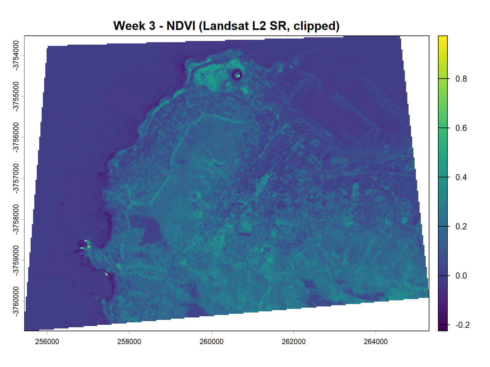
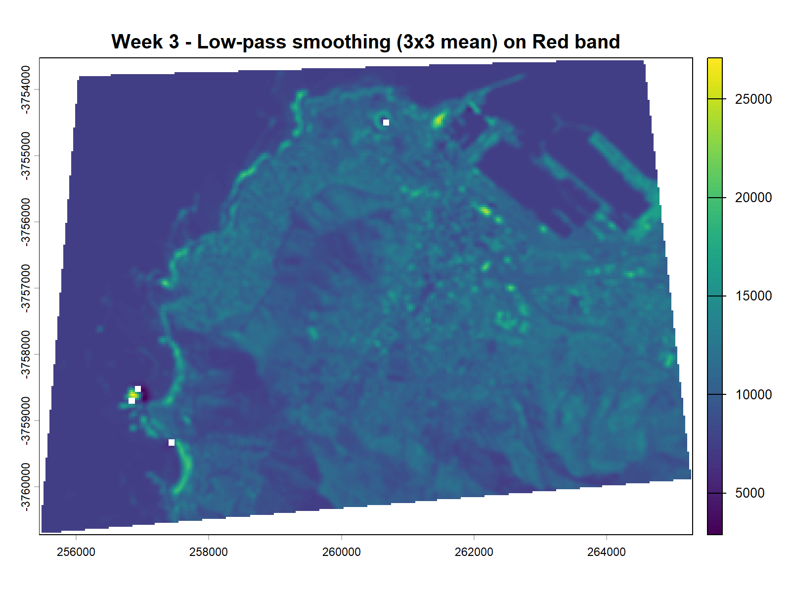
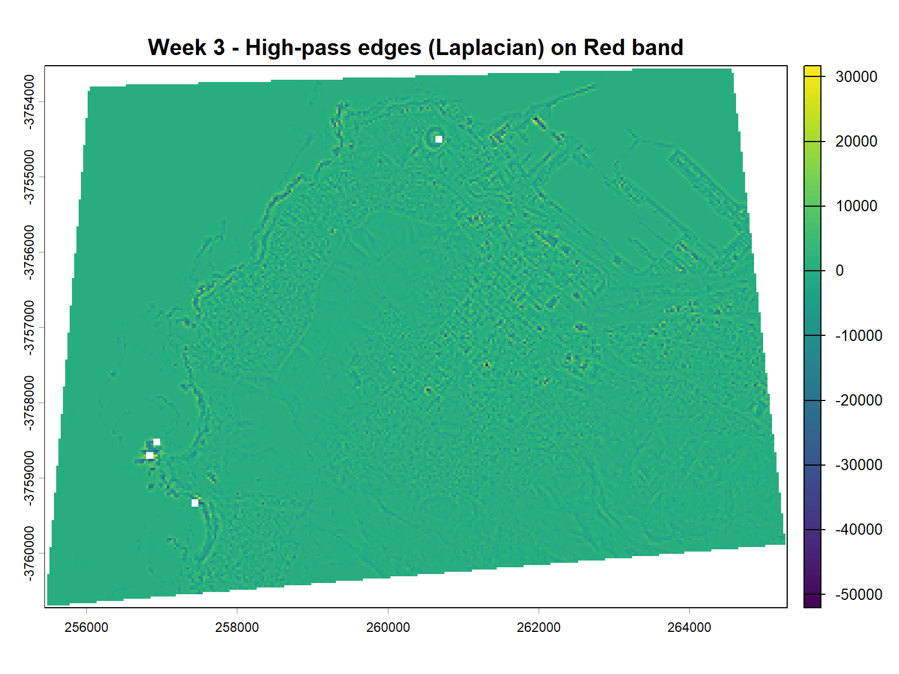
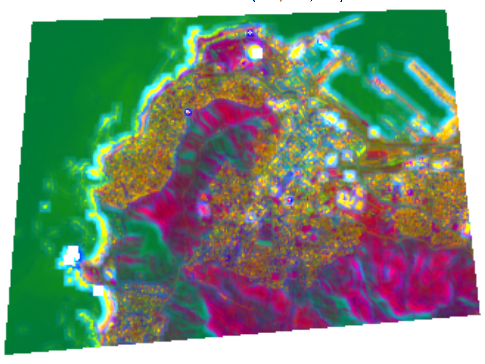
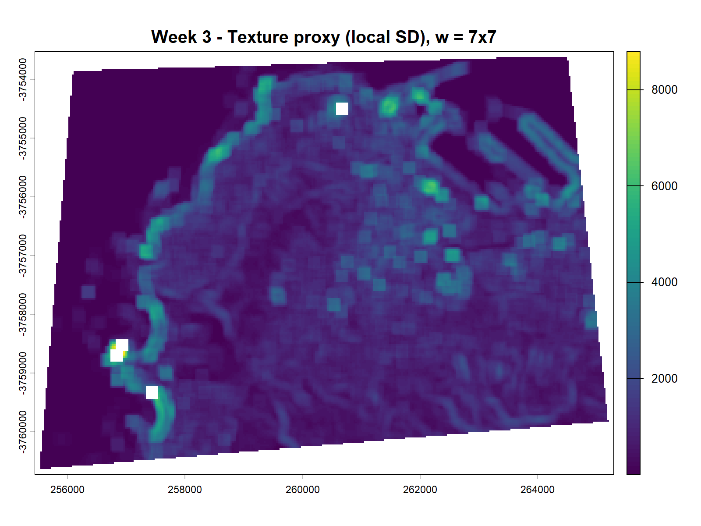

3 week 3
3.1 Summary
This week focused on image corrections and image enhancement for remote sensing analysis. The lecture explained why raw pixel values are not stable across space and time. Geometric correction aligns an image to the ground so that each pixel is in the right place. This can involve ground control points, a transformation model, and resampling to a common grid.(Jensen 2016a) Atmospheric correction reduces scattering and absorption so values are closer to surface reflectance.(“Radiative Transfer and Atmospheric Correction” 2013)This supports fair comparison across dates and sensors and helps change analysis. The lecture also introduced analysis ready data, where key corrections are already applied, but the user still needs to understand what the product includes and what limits remain.(“CEOS Analysis Ready Data,” n.d.)
In the practical I used Landsat Collection 2 Level 2 surface reflectance for Cape Town.(“Landsat Collection 2 Level-2 Science Products | U.S. Geological Survey” 2022) I loaded only the surface reflectance bands and clipped them to my study area polygon. My shapefile had a missing coordinate system, so I assigned WGS84 and then transformed it to the Landsat projection before crop and mask. After clipping I created several enhancement layers. I calculated NDVI from the red and near infrared bands to describe vegetation activity.(Jensen 2016b) The NDVI map shows higher values in the mountain and green areas and lower values over water and dense built surfaces.

I then applied a vegetation mask using an NDVI threshold of 0.2 to separate likely vegetation from other land covers. This mask is simple and fast, but it can include false positives where soil is bright or where shadows change the index.(Jensen 2016c)

Next I tested spatial filtering on the red band. A low pass 3 by 3 mean filter reduced local noise and made broad patterns clearer. A high pass Laplacian filter highlighted edges, which made coastlines and sharp land cover boundaries more visible.
 
I also computed a texture proxy using a 7 by 7 local standard deviation. This layer emphasised heterogeneous urban fabric and mixed surfaces. Finally I fused the surface reflectance bands with the texture layer and ran PCA. The PCA composite increased contrast between major surface types and showed that combining spectral and spatial features can reveal structure that is not clear in one band.
 
3.2 Applications
Corrections matter when a study compares images across time or across sensors. Atmospheric effects can shift reflectance values even if the surface is unchanged, so surface reflectance products are often preferred for monitoring vegetation, drought, or urban change.(Jensen 2016c; “Landsat 8-9 Collection 2 Level 2 Science Product Guide | U.S. Geological Survey” 2024a) A Cape Town drought study used Landsat data with vegetation indices to map drought severity and its spatial pattern, which shows how corrected reflectance supports environmental analysis at city scale.(Orimoloye et al. 2019) In practice, using an analysis ready product reduces processing time, but it does not remove the need for quality checks. Cloud, haze, and shadow still affect pixels, and each product has its own algorithm and quality masks.For mosaics or multi scene analysis, consistent correction also helps to reduce seams and brightness jumps before compositing or further modelling
Enhancement methods then turn corrected bands into features that match a research question. NDVI is a simple ratio that isolates vegetation signal and reduces some illumination effects, so it is widely used for mapping urban greenness and tracking stress. In my outputs, the NDVI and the vegetation mask provide a fast first separation between vegetated and non vegetated surfaces, which could support later classification or sampling design. Spatial filters and texture measures add information about local structure. Edge filters can highlight roads, coastlines, and block boundaries, while local variability can separate smooth water from complex built surfaces. Urban land cover studies often combine spectral indices with extra features and tuned thresholds because cities mix materials within one pixel and create strong shadow effects.(Faridatul and Wu 2018) Data fusion extends this idea by combining sensors with different strengths. A review on multispectral and radar fusion shows that combining datasets can improve monitoring when optical data are limited by clouds and when structure information is needed.(Schulte To Bühne and Pettorelli 2018) My fused PCA step followed the same logic at a smaller scale by combining reflectance with a texture layer, then using PCA to compress the information into a few components that are easier to visualise and can be used as inputs for models.(Jensen 2016d)
3.3 Reflection
This week helped me link theory about corrections with practical feature building. I now see surface reflectance as a foundation for most comparisons, but I also see the risk of treating it as a black box. For my Cape Town workflow, the first challenge was not an algorithm but metadata, because my study area file had no coordinate system. Fixing the coordinate system and matching projections was essential before any analysis. This reminds me that good results depend on simple checks such as coordinate reference systems, band names, and missing data.
The enhancement steps were fast to run, but they involve choices that affect meaning. An NDVI threshold of 0.2 is easy to explain, yet it is not universal and it can confuse sparse vegetation, bright soil, and shadow. Texture and filtering depend on window size. A 7 by 7 window shows broad heterogeneity but can miss small features, and larger windows increase computation. The high pass filter made boundaries clearer, but it also amplified noise, so it needs careful display scaling and may not be stable for quantitative use without normalisation.
Next I want to improve this workflow by using the Landsat quality masks to remove clouds and by testing how sensitive results are to threshold and window size.(“Landsat 8-9 Collection 2 Level 2 Science Product Guide | U.S. Geological Survey” 2024b) I also want to connect these features to an outcome, such as a supervised land cover map or a change map, so that I can evaluate whether added features truly improve performance rather than just looking visually better.